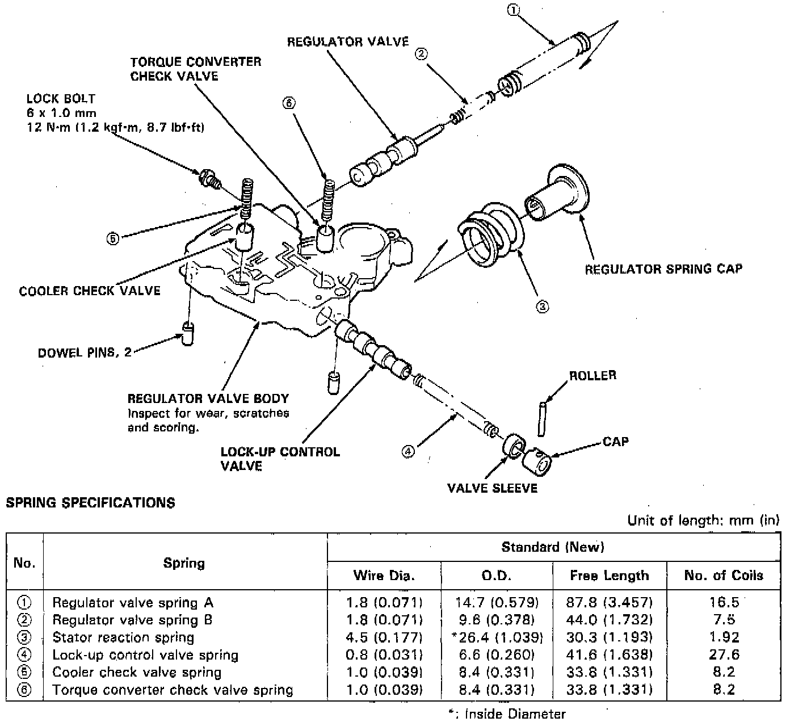

Regulator Valve Body

NOTE:
- Clean all parts thoroughly in solvent or carburetor cleaner, and dry with compressed air.
- Blow out all passages.
- Replace valve body as an assembly if any parts are worn or damaged.
- Check all valves for free movement. If any fail to slide freely, see Valve Body Repair.
1. Hold the regulator spring cap in place while removing the lock bolt. Once the bolt is removed, release the spring cap slowly.
CAUTION: The regulator spring cap can pop out when the lock bolt is removed.
2. Reassembly is in the reverse order of the disassembly procedure.
NOTE:
- Coat all parts with ATF.
- Align the hole in the regulator spring cap with the hole in the valve body, press the spring cap into the body and tighten the lock bolt.